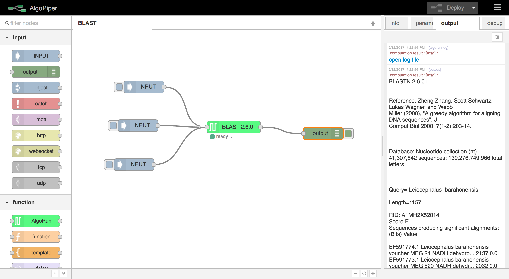
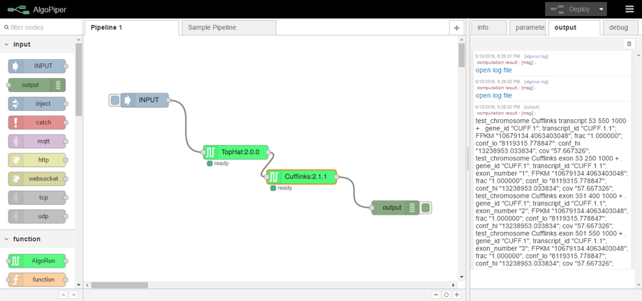
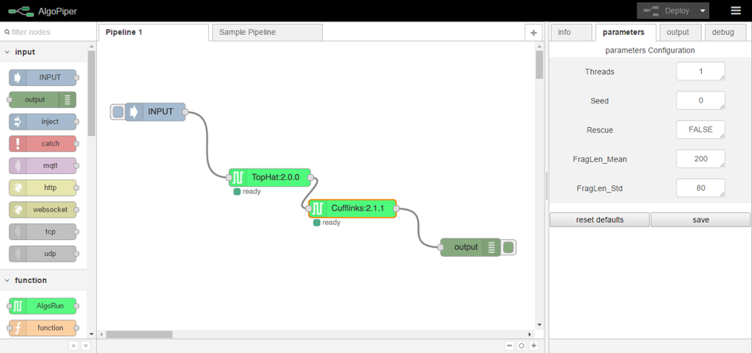
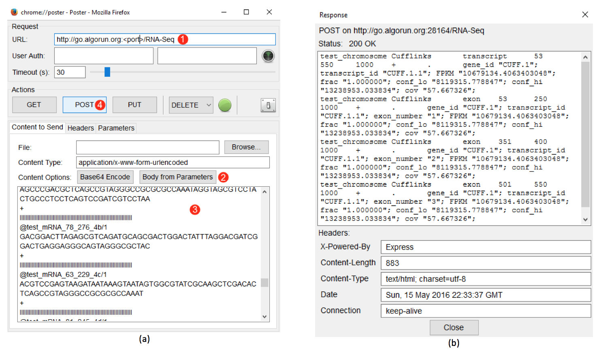

AlgoPiper Documentation¶
AlgoPiper is a web-based software tool that offers a graphical user interface to create, run, integrate and share pipelines consisting of algorithms packaged with AlgoPiper. This page provides a tour through AlgoPiper interface and how to use it to create computational pipelines, run them on a given dataset, integrate them with other software tools using a RESTful API, and share them on AlgoPiper website. It also gives examples as cases of study for using the tool.
Access AlgoPiper¶
AlgoPiper Website: AlgoPiper is available as a web-based tool that can be used immediately from the website. Navigate to http://algopiper.org and hit the Launch tab.
User Guide¶
Note
You can skip reading this section and learn to use AlgoPiper through an interactive step-by-step tutorial by the online instance of AlgoPiper Access AlgoPiper
Figure 1 - AlgoPiper Interface. (1) Main workspace to create a pipeline. (2) Pipelines are arranged into tabs. Click ‘+’ to add more pipelines. (3) Input node: represents input data to the pipeline. (4) Output node: is used to preview the output of the pipeline. (5) AlgoRun node: represents individual algorithms packaged using AlgoRun. (6) A tab to present detailed information about a selected node. (7) A tab to modify AlgoRun node parameters <algorithm parameters>. (8) A tab to present results from the output node. (9) A tab to present log information from debug node. (10) Deploy button to build a pipeline after creation.
1. Create Pipelines¶
To create a pipeline, drag and drop nodes from the left-side bar. A basic pipeline contains the following nodes:
- Input node: is used to upload data to the pipeline. Drag an input node to the main workspace. Double click on the node to type data in the input dialog or upload a file.
Figure 2 - Input node dialog
- AlgoRun node(s): each AlgoRun node represents an algorithm ready to be run on a given input. The input is passed to the node from the left. The output from the node is produced toward the right. Drag an AlgoRun node into the main workspace. Double click on the node to select an algorithm from the list.
Figure 3 - AlgoRun node dialog
On the right sidebar, there are more tabs that show information about the selected algorithm:
- Info tab: shows algorithm description, input and output formats, and a reference to the algorithm page.
- Parameter tab: shows algorithm parameters that can be changed dynamically.
- Output node: previews the output from the pipeline in the output tab on the right.
Connect the input node to the AlgoRun node by clicking on the small dot on the right of the input node to the small dot on the left of the AlgoRun node. Similarly, connect the small dot on the right of the AlgoRun node to the small dot on the left of the output node. After creating the pipeline, hit deploy on the top-right corner.
2. Run Pipelines¶
To run a pipeline, click on the small button on the left of the Input node. This will trigger the pipeline by passing the input to the next node (after the Input) in the pipeline. Output appears in the output tab on the right sidebar.
Figure 4 - Run a pipeline and preview output
Note
If you cannot find the algorithm you are looking for, follow the guide on http://algorun.org/documentation to package it into an AlgoRun container. Submit the packaged algorithm to AlgoRun website http://algorun.org/submit-algorithm and it will automatically appear in the ‘choose’ list of the AlgoRun node.
3. Integrate Pipelines¶
After creating and testing the pipeline on some arbitrary data, integrate it into other software tools by adding an HTTP endpoint node before the first node in the pipeline (replacing the Input node) and an HTTP response node after the last node in the pipeline (replacing the output node). See the below images for an example.
Figure 5 - Integrating a pipeline by adding an HTTP endpoint
5. Submit Your Pipeline (Optional)¶
If you built your pipeline with AlgoPiper and want to share it publicly, do not hesitate to submit it for listing on the AlgoPiper website. The AlgoPiper website serves as a repository for all computational pipelines that were exported from AlgoPiper: http://algopiper.org
To submit your pipeline for listing, fill the form located at http://algopiper.org/submit-pipeline
Examples¶
Parallel BLAST Jobs¶
BLAST (Basic Local Alignment Search Tool) is a suite of programs provided by NCBI for aligning query sequences against those present in a selected target database. In this example, we create a BLAST pipeline that can be used to perform parallel search in nucleotide databases using multiple nucleotide queries. Running parallel BLAST queries saves computation time and the created pipeline can be integrated into other software tools through a RESTful web API .
Tip
You can skip reading this section by importing this pipeline directly from AlgoPiper website. Navigate to http://algopiper.org/browse to search for available pipelines. In the search box, type in “BLAST” to find it and launch immediately.
1. Create the Pipeline
- From the palette of nodes on the left, drag an AlgoRun node and drop it into the main workspace. Double click on the node and choose “BLAST” from the dropdown list of available algorithms. Click ok to close the edit dialog. Detailed information about BLAST is shown in the info tab on the right-side panel.
- Drag an input node and drop it to the left of the BLAST node. Include as many input nodes as the number of the parallel jobs you will submit. Double click on each input node and upload the nucleotide query file, or copy and paste the query into the text area ( some inputs to try ). Connect all input nodes to the BLAST node.
- Drag an OUTPUT node and drop it to the right of the BLAST node. Connect the BLAST node to the output node. The below figure shows the complete pipeline with three parallel jobs.
- Hit Deploy on the top-right corner. This initializes the pipeline and the back-end AlgoRun containers then perform the computations.

Figure 7 - BLAST Jobs Pipeline
2. Run the Pipeline
To submit the jobs, click on the small button on the left of each input node. This will pass the nucleotide query from each input node to the BLAST node which will run separate parallel threads for each input. Results appear on the output tab on the right.
Figure 8 - BLAST search results appear on the output tab
Click open log file to open the output in a separate file that you can download. Scroll down to see results from other threads (and open the corresponding log files).
Hint
The output node is used to display the results on the output tab. The BLAST node, and all AlgoRun nodes, log the results to a file even after removing the output node.
3. Integrate the Pipeline
Besides running BLAST jobs manually (by triggering the input node), you can wrap the pipeline in a web API by providing HTTP access to the pipeline functionality.
- Remove the input and output nodes from the pipeline. Keep the BLAST node.
- Drag an http node from the left palette to the left of the BLAST node. Double click on the node to define the request method and the URL. Set the request method to POST and the URL to
/blast. Give it an optional name and click ok. - Drag a function node from the palette to the right of the http node. The function node is used to parse the http request and only relay the nucleotide query to be inputted to the BLAST node. Edit the function node as shown in the code snippet on the right.

Figure 9 - The function node
- Drag an http response node from the left palette to the right of the BLAST node.
- Connect the http node to the function node. Connect the function node to the BLAST node. Connect the BLAST node to the http response node.
- Hit Deploy to initialize the pipeline. The resulting pipeline is shown in the figure below.

Figure 10 - Integrating BLAST pipeline using HTTP POST endpoint
As an example of running the pipeline through the web API, see the Firefox Poster plugin example below. The web API can be used in any other plugins or programming languages.

Figure 11 - Submitting a BLAST job using AlgoPiper API. (1) Type in the URL of the AlgoPiper followed by /blast (2) Choose “Body from Parameters” to send the parameters in the format of form-urlencoded. (3) Type input=<place your input here> in the input area. (4) Click POST to send the request and receive the results.
4. Share the Pipeline
Now, export the pipeline to a JSON format to save to a local file or share it on AlgoPiper website. Use the mouse to select all nodes in the pipeline. From the top-right menu, choose Export and click Clipboard. Copy the JSON text and paste it to a local text file or submit it directly to AlgoPiper website (http://algopiper.org/submit-pipeline).
Figure 12 - Sharing the BLAST Pipeline
Analysis of high-throughput mRNA sequencing (RNA-Seq data) Pipeline¶
Next Generation Sequencing (NGS) enables researchers to study biological systems at a large scale. In this example, we create a pipeline that performs basic analysis of Illumina RNA-seq data using a sample transcriptome with the goal of obtaining expression scores or annotated genes. The pipeline depends on TopHat for alignment and Cufflinks for counting and expression scoring; both are previously packaged with AlgoRun. TopHat was packaged with a test reference file for illustration purpose. To package TopHat with your own genomic reference, refer to the examples folder of AlgoRun repository to re-package TopHat locally with your own reference file.
Tip
You can skip reading this section by importing this pipeline directly from AlgoPiper website. Navigate to http://algopiper.org/browse to search for available pipelines. In the search box, type in “RNA” to find it and launch immediately.
1. Create the Pipeline
- From the palette of nodes on the left, drag an AlgoRun node and drop it into the main workspace. Double click on the node and choose “TopHat” from the dropdown list of available algorithms. Click ok to close the edit dialog. Detailed information about TopHat is shown in the info tab on the right-side panel.
- Drag an AlgoRun node and drop it into the main workspace. Double click on the node and choose “Cufflinks” from the dropdown list of available algorithms. Click ok to close the edit dialog. Detailed information about Cufflinks is shown in the info tab on the right-side panel.
- Drag an input node and drop it to the left of the TopHat node. Double click on the input node and copy and paste the sample input in this link: http://tophat.algorun.org/algorun_info/input_example.txt
- Connect the input node to the TopHat node. Connect the output from the TopHat node to the input of the Cufflinks node.
- Drag an OUTPUT node and drop it to the right of the Cufflinks node. Connect the output of the Cufflinks node to the output node. The below figure shows the complete pipeline.
- Hit Deploy on the top-right corner. This initializes the pipeline and the back-end AlgoRun containers the perform the computations.
Figure 13 - RNA-Seq analysis pipeline using TopHat and Cufflinks
2. Run the Pipeline
To start analysis, click on the small button on the left of each input node. This will pass the sequence reads from the input node to the TopHat node which will automatically pass the results to the Cufflinks node. Results appear on the output tab on the right.
Figure 14 - RNA-Seq analysis pipeline results appear on the output tab
Hover over the first open log file line, it will highlight the TopHat node, indicating that this log file came from the TopHat node. Hover over the second open log file line, it will highlight the Cufflinks node, indicating that his log file came from the Cufflinks node. The output from Cufflinks is printed in the output tab as well.
3. Manipulate Cufflinks Parameters
AlgoPiper interface enables you to change algorithms parameters without re-deploying the pipeline again. Select the Cufflinks node and open the parameters tab from the right. The parameters of Cufflinks are shown in the figure below. Change the FragLen_Mean parameter from the default value of 200 to some other value and click save. This will change the fragment length average of unpaired reads input to your new value. Re-running the pipeline means using the newly saved parameters when Cufflinks module is invoked.
Figure 15 - Changing Cufflinks parameters on-the-go
4. Integrate the Pipeline
Besides running the RNA-Seq analysis manually (by triggering the input node), you can wrap the pipeline in a web API by providing HTTP access to the pipeline functionality.
- Remove the input and output nodes from the pipeline. Keep the TopHat and Cufflinks nodes.
- Drag an http node from the left palette to the left of the TopHat node. Double click on the node to define the request method and the URL. Set the request method to POST and the URL to
/RNA-SeqGive it an optional name and click ok. - Drag a function node from the palette to the right of the http node. The function node is used to parse the http request and only relay the RNA sequence reads to be inputted to the TopHat node. Edit the function node as shown in the code snippet on the right.
- Drag an http response node from the left palette to the right of the Cufflinks node.
- Connect the http node to the function node. Connect the function node to the TopHat node. Connect the Cufflinks node to the http response node.
- Hit
Deployto initialize the pipeline. The resulting pipeline is shown in the figure below.

Figure 16 - Integrating RNA-Seq analysis pipeline using HTTP POST endpoint
As an example of running the pipeline through the web API, see the Firefox Poster plugin example below. The web API can be used in any other plugins or programming languages.
Figure 17 - Submitting RNA sequence reads using AlgoPiper API. (a): (1) Type in the URL of the AlgoPiper followed by /RNA-Seq (2) Choose “Body from Parameters” to send the parameters in the format of form-urlencoded. (3) Type input=<place your input here> in the input area. (4) Click POST to send the request and receive the results. (b): results from running the pipeline via API.
5. Share the Pipeline
Now, export the pipeline to a JSON format to save to a local file or share it on AlgoPiper website. Use the mouse to select all nodes in the pipeline. From the top-right menu, choose Export and click Clipboard. Copy the JSON text and paste it to a local text file or submit it directly to AlgoPiper website (http://algopiper.org/submit-pipeline).

Figure 18 - Sharing RNA-Seq data analysis pipeline
Local Installation¶
NOTE: If you are going to use the online version of AlgoPiper, ignore this section!
Thanks to the distributed architecture of the tool, AlgoManager and AlgoPiper can run on two different machines (locally or remotely).
Install Prerequisites¶
The only prerequisite is the Docker Engine: Follow the instructions on: https://docs.docker.com/engine/installation/
Download AlgoManager¶
- Clone AlgoManager repository https://github.com/algorun/algomanager
- Navigate to the downloaded folder.
- Run the script
run.sh - Go to http://localhost:8080 and make sure it is working
Configuring the Production Environment¶
If you want to set AlgoManager on a shared server, edit algomanager/settings.py file. Change SERVER_PATH = 'http://localhost' to SERVER_PATH = 'http://server_IP'
Add Available Algorithms¶
Now, let AlgoManager be aware of what algorithms (AlgoRun containers) are available on your machine (or server).
- Run docker
exec -it algomanager bash - Run
python manage.py createsuperuser. This will prompt you to create an admin user to manage the available algorithms on this algomanager instance. - Now exit this bash using
exit. Go to http://localhost:8080/admin/. Enter your newly created username and password. After you login, click on +Add, right beside Available Algorithms. Enter the name of the algorithm and its AlgoRun container. For example: Name=REACT and Docker Image=algorun/react:latest. Don’t forget todocker pullthose images from Docker Hub, before you make them available.
Run AlgoPiper¶
AlgoPiper is available as a Docker image on Docker Hub.
To run an instance of it, use docker run -p 8081:8765 -e MANAGER=<algomanager_url> algorun/algopiper, where <algomanager_url> is the url where AlgoManager is running. Now, navigate to http://localhost:8081 to use it.
Congraulations! You now have a fully working version of AlgoPiper :)
Need Help?¶
Please contact Abdelrahman Hosny at abdelrahman.hosny@hotmail.com